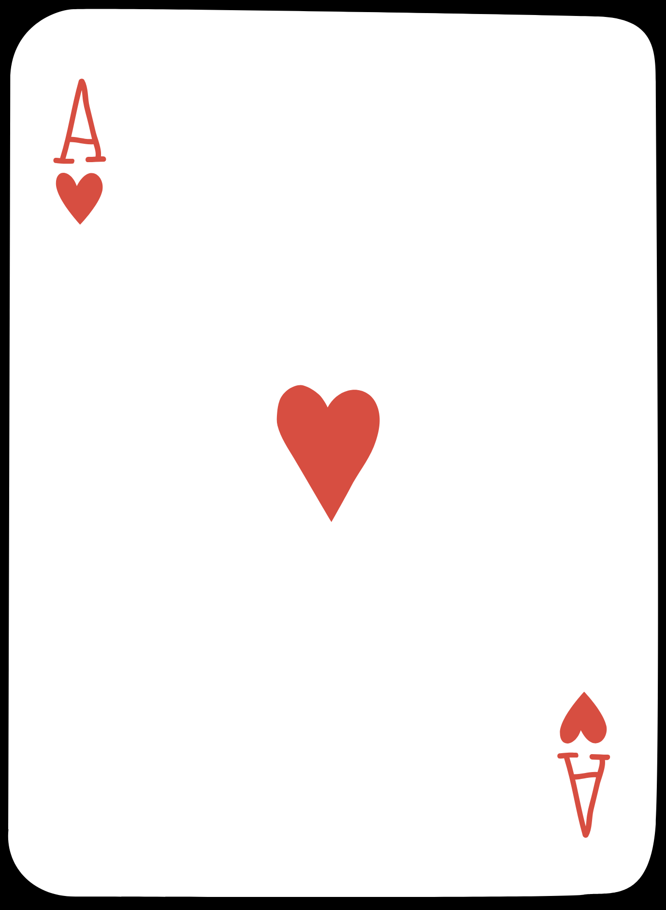

This is a digital character and background design for animtion portfolio. Throughout this portfolio you'' see various designs from both personal and school projects that outline my techinal skills.
The purpose of this website is to act as an art portfolio for future work and to hopefully one day land me a job when the website is complete. And while I do want this to look well put together and be easy to navigate I also want to learn how to incorporate some fun stylization to the pages in order to help it stand out against competitors. Overall I want the pages to be very interactive and colorful that not only stands well enough on its own, but also highlight the pieces/ projects that will be showcased here.
“Truth does not do as much good in the world as the appearance of truth does evil.” -François de La Rochefoucauld.